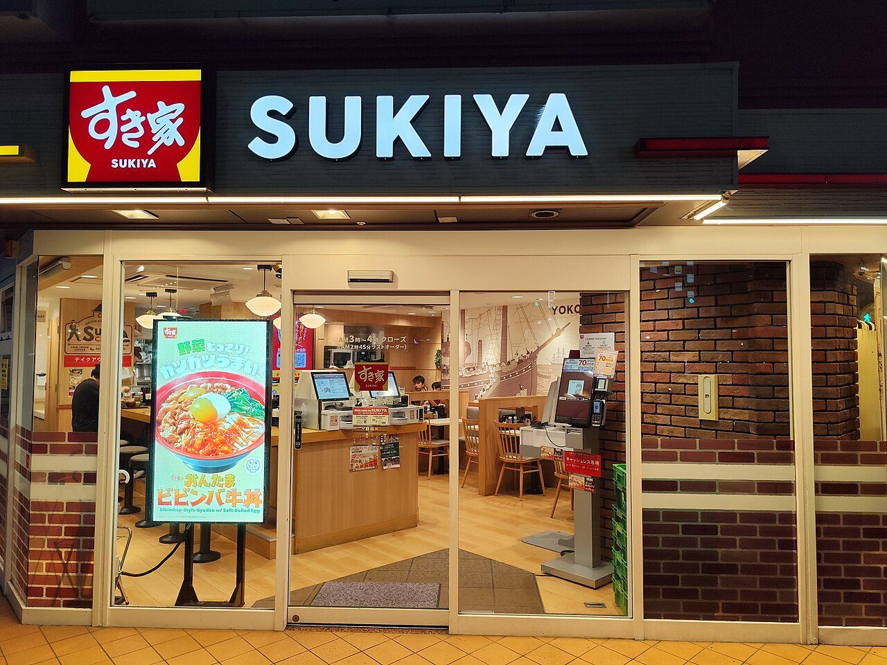
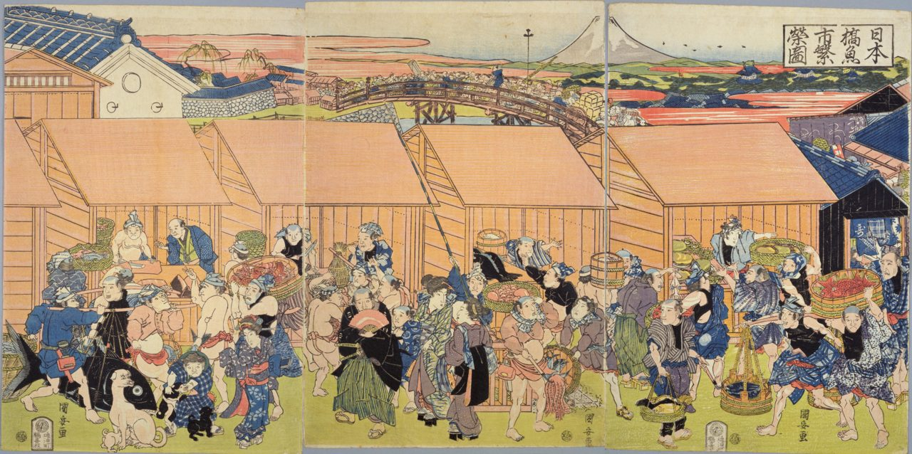
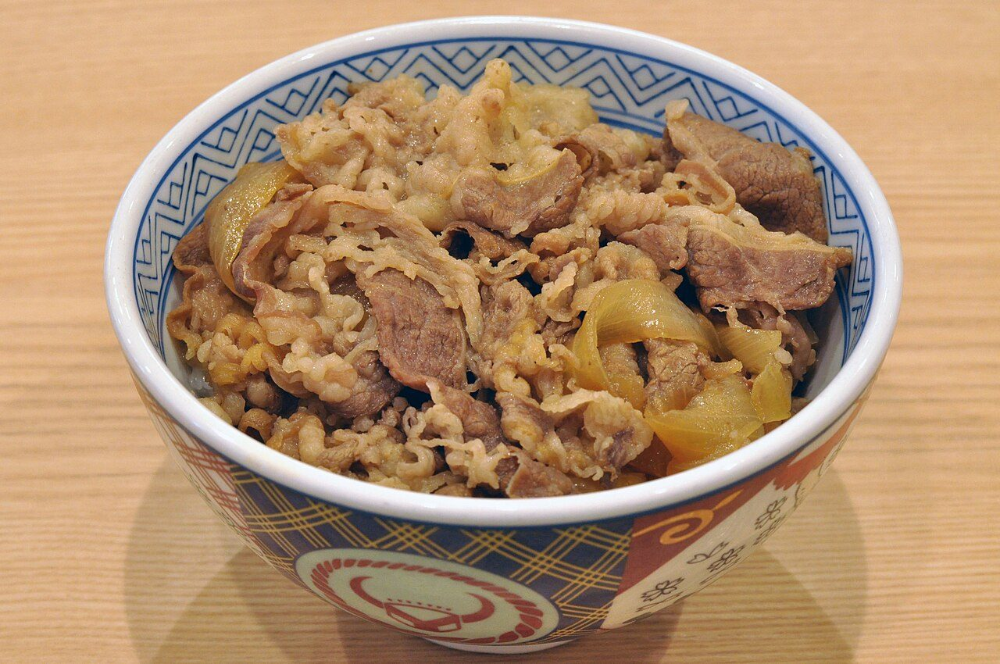
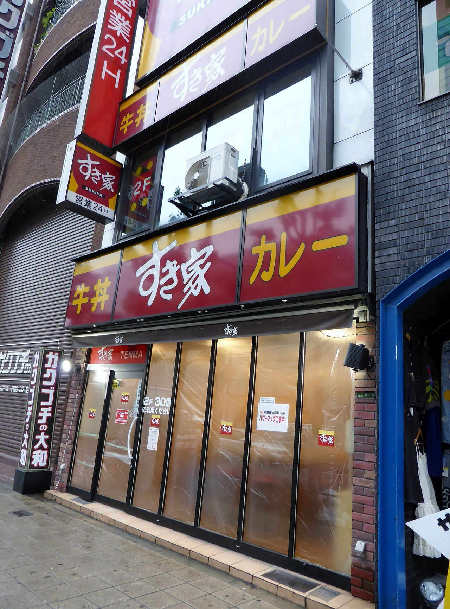
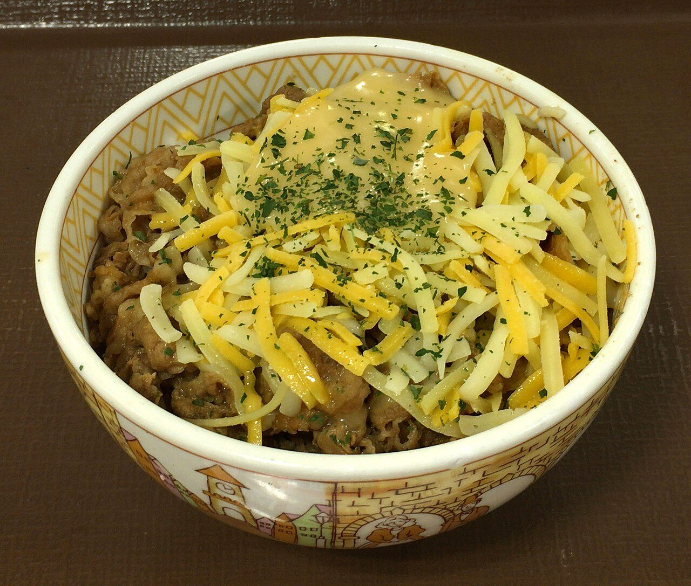
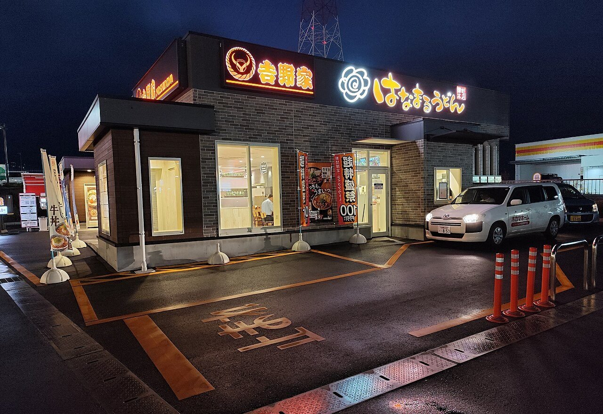
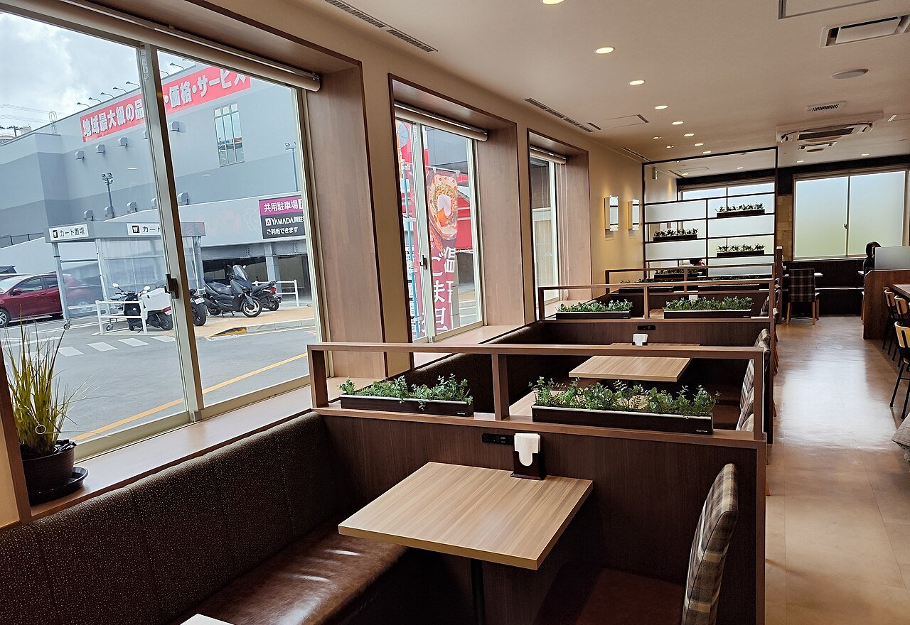

横浜・生麦、1982年11月。京急の生麦駅の前のビルに、小さな牛丼店が開きました。店の名は「すき家」。開いたのは、その年の6月にできたばかりの会社ゼンショー。率いていたのは、もと吉野家の社員だった男でした。
それから40年あまり。すき家はいま、国内に約2,000店をもつ、日本でいちばん店の多い牛丼チェーンです。では、すき家は吉野家から生まれたのでしょうか。2つの店のあいだには、何があったのでしょう。

すき家を始めた人は、もと吉野家の社員でした。1899年に魚河岸で生まれた吉野家が1980年に行きづまったとき、その内側で何が起きていたのか。2社の年表と、材料から店までの流れ図、いまの店の数のグラフで、牛丼チェーンが分かれた道をたどってみませんか。
横浜・生麦、1982年11月。京急の生麦駅の前のビルに、小さな牛丼店が開きました。店の名は「すき家」。開いたのは、その年の6月にできたばかりの会社ゼンショー。率いていたのは、もと吉野家の社員だった男でした。
それから40年あまり。すき家はいま、国内に約2,000店をもつ、日本でいちばん店の多い牛丼チェーンです。では、すき家は吉野家から生まれたのでしょうか。2つの店のあいだには、何があったのでしょう。
すき家は吉野家の子会社でも、のれん分けでもありません。ただ、創業者の小川賢太郎はもと吉野家の社員で、吉野家の倒産を内側で見た人でした。すき家は、その吉野家とは別の道を選んで大きくなりました。
吉野家の始まりは1899年、東京・日本橋の魚河岸（うおがし。魚の市場）です。大阪から出てきた松田栄吉が、当時はやっていた「牛めし」をもとに、市場で働く人向けの牛丼の店を開きました。店の名は、栄吉が好きだった奈良・吉野の桜からとったといいます。
お客は、忙しくて舌の肥えた魚河岸の人たちでした。1923年の関東大震災で店が焼け、市場が築地へ移ると、吉野家も1926年に築地へ移ります。

大きく変わったのは1968年です。東京・新橋に2号店を開き、チェーン店（同じ名前・同じ味の店を何軒も出す形）として広がり始めました。1970年代はじめには並盛が200円、合言葉は「早い、うまい、安い」でした。
ところが1978年に店が200を超え、翌1979年には牛肉の仕入れが追いつかなくなります。そこで、乾かした肉（フリーズドライ）や粉にしたたれを使い始めると、味が落ちてお客が離れました。急に店を増やしたことでお金のやりくりも苦しくなっていました。
1980年7月、吉野家は会社更生法の適用を申し立てます。会社を消さずに、裁判所の監督のもとで借金を整理し、立て直すための手続きです。一般には「吉野家の倒産」と呼ばれています。
小川賢太郎は1948年、石川県の生まれ（2026年4月に77歳で死去）。東京大学を学生運動のなかで中退し、横浜の港で荷物を運ぶ仕事についたあと、1978年に新聞の求人広告を見て吉野家に入りました。店長から経理部の次長へと、短いあいだに出世していきます。
入って2年で、吉野家は会社更生法を申し立てます。再建の方針をめぐって、のちに吉野家の社長となる安部修仁氏の側と、小川が支持する側が対立し、小川の側は敗れました。
小川は、吉野家の大株主だった新橋商事（本業は不動産管理）の外食部門に移ります。しかし、外食の仕事に求められる速さと、その会社の進め方は合いませんでした。

1982年6月、小川は横浜市鶴見区でゼンショーをつくります。本社には最初から工場がついていました。7月に開いた1号店は牛丼ではなく、弁当の店「ランチボックス」。注文ごとにおかずを作る手間がかかり、うまくいきませんでした。
4か月後の11月に開いたのが、すき家の1号店です。小川は独立について、のちに「同じ苦労をするなら、すっきりした形でやりたい」と振り返っています（日本経済新聞夕刊「人間発見」1999年。PRESIDENT Online 2026年4月27日より）。
吉野家が広がったのは、新橋や神田のような都心の駅前でした。忙しい人がカウンター席でさっと食べて出ていく店です。すき家も1号店は駅前でしたが、1987年に茨城県の水戸に、初めて建物が1軒まるごとの店を開きます。
すき家はその後、郊外の大きな道路ぞいに店を増やしました。家族連れでも入りやすいようにテーブル席を用意し、看板には牛丼と並べて「カレー」をかかげました。チーズなどをのせた牛丼を早くから打ち出したのも、すき家だとされます。


もう1つの違いは、店の裏側にあります。ゼンショーは、材料を買うところから、工場で加工し、トラックで運び、店で売るまでを、自分たちのグループで一貫して行っています。調達から店まで、自分たちでやる仕組みです。
いま、店の数でいちばん多いのはすき家です。2026年春の各社の発表では、すき家が国内に約2,000店、吉野家が1,290店。3番手は、松屋の牛めしの店の1,185店です。
松屋は1968年、東京・江古田（えこだ）に牛めしの店を開きました。牛丼を「牛めし」と呼び、券売機で食券を買う形で、定食にも力を入れています。
いっぽう、すき家と吉野家の道は近づいています。吉野家もいまは郊外の店が多く、広い駐車場やテーブル席のある店があります。すき家にも、扉の写真の京都の店のように、街なかでカウンター席が並ぶ店があります。
駅前のカウンターと郊外のテーブル席という分かれ方は、少しずつ混ざり合ってきました。いまは、店の形だけで2つを見分けるのは難しくなっています。


小川が吉野家に入ってから、吉野家が会社更生法を申し立てるまで。そのさらに2年後、小川はゼンショーをつくった吉野家・ゼンショーの沿革による
ゼンショーの1年間の売上高。すき家のほか、回転ずしの「はま寿司」なども含む2026年3月期。決算発表の報道による
ゼンショーのグループが国内外で運営する店の合計。そのうち、すき家の国内の店は約2,000店ゼンショーのウェブサイトによる
2003年12月、アメリカで牛の病気BSE（牛海綿状脳症。いわゆる狂牛病）が見つかり、日本はアメリカ産牛肉の輸入を止めました。大手の牛丼チェーンは、相次いで牛丼の販売をやめます。
すき家は2004年2月に牛丼をやめましたが、9月にはオーストラリア産の牛肉に切りかえて売り始めました。いっぽう吉野家はアメリカ産の肉にこだわり、多くの店で牛丼を休みます。本格的な再開は2006年9月で、その間は豚丼などでしのぎました。
そして2008年9月末、すき家は1,087店となり、1,077店の吉野家を店の数で抜きました。当時の新聞は、郊外で家族連れをねらった戦略も理由に挙げています（産経新聞、2008年10月7日）。
1980年も2004年も、吉野家が苦しんだおもな理由は牛肉の仕入れでした。牛丼チェーンの行方は、何度も店の外、牛肉の仕入れでゆさぶられてきたのです。
次に牛丼を食べるときは、メニューや店の貼り紙で、牛肉がどこの国から来ているかを見てみてください。一杯の向こうに、海の向こうの牧場が見えてくるはずです。